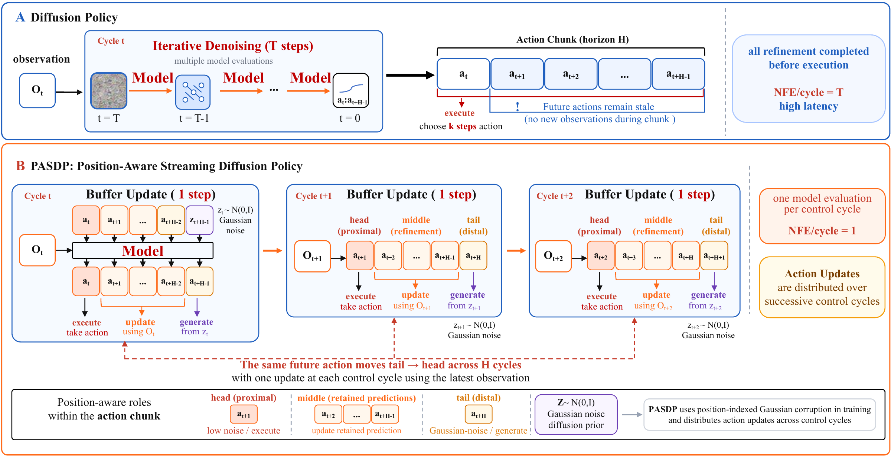
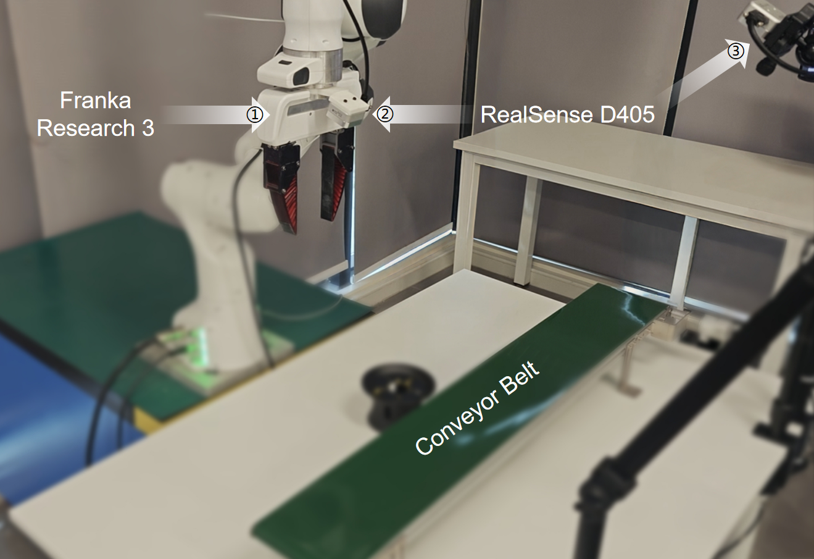
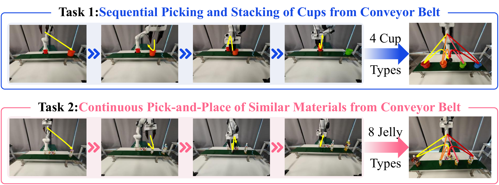

Reference
1× Motion
Reference-speed execution for comparison.
1 School of Automation, Chongqing University, Chongqing 400044, China
2 School of Computer Science and Information Engineering, Hefei University of Technology, Hefei, China
3 Department of Electrical and Electronic Engineering, The Hong Kong Polytechnic University, Hong Kong SAR, China
Corresponding author: Yizhuo Sun (syz_cqu@cqu.edu.cn)
Real-Time Performance
PASDP updates retained action predictions using the latest observation, with one network evaluation per steady-state policy inference.
Execution-rate demonstrations at 1×, 2×, and 4× are shown below. These motion settings are not inference-speed ratios or the quantitative trial averages reported in the tables.
Reference-speed execution for comparison.
Intermediate-speed execution with streaming inference.
Temporally compressed execution at the 4× motion setting.
Diffusion policies effectively model multimodal action distributions, but iterative denoising introduces latency in closed-loop manipulation. PASDP aligns position-indexed Gaussian corruption during training with the movement of retained action predictions through a persistent buffer during inference. The network predicts clean actions without an explicit diffusion-timestep or per-action noise-level input. In the canonical N = 1 mode, each control cycle executes the buffer-head action, shifts retained predictions, appends Gaussian noise at the tail, and updates the complete buffer from the latest observation in one network evaluation. Future predictions can therefore be refined across successive control cycles before execution. On ten Robomimic tasks, PASDP achieves 77.0% macro-average success with 18 ms policy inference, compared with 75.2% at 83 ms for the evaluated iterative DP baseline under method-dependent configurations. In two real-world conveyor tasks, PASDP reaches more stages in sequential picking-and-stacking and requires fewer arriving objects per ten successful grasps than the evaluated DP baseline.
Codebase: GitHub source code.
Installation, training, and evaluation guide.
1 School of Automation, Chongqing University, Chongqing 400044, China
2 School of Computer Science and Information Engineering, Hefei University of Technology, Hefei, China
3 Department of Electrical and Electronic Engineering, The Hong Kong Polytechnic University, Hong Kong SAR, China
Corresponding author: Yizhuo Sun (syz_cqu@cqu.edu.cn)
PASDP uses the action position to organize both training and closed-loop inference. During training, the corruption level decreases from the buffer tail to the execution head. During inference, the same ordering is used in a persistent action buffer. A future execution slot enters at the tail and is re-predicted after each buffer shift until it reaches the head.

In the standard N = 1 mode, the position index specifies both the order within the prediction horizon and the number of buffer shifts remaining before execution. Distal positions receive stronger Gaussian corruption, while the final position receives pure Gaussian noise.
Proximal actions directly determine the next robot motion. Distal predictions remain in the buffer and can be updated before execution. PASDP therefore assigns greater loss weight to positions near the execution head.
After executing the head action, PASDP shifts the remaining predictions toward the buffer head and appends Gaussian noise at the tail. The network then re-predicts the complete buffer once from the latest observation. One policy inference contains one network evaluation.
Across ten Robomimic tasks, PASDP achieves 77.0% macro-average success with 18 ms policy inference. The primary comparison uses H = 40 and NFE = 1 for all four methods; method-specific settings may still differ. Iterative baselines under their own configurations are reported separately below.
Reported simulation protocol: 200 demonstrations per task, 250 training epochs, batch size 64, and training seed 42. Checkpoints are selected on 30 validation episodes (seeds 100000–100029); final results use 100 test episodes per task (seeds 20000–20099). Latency includes visual encoding and action generation after warm-up on an AMD EPYC 7K62 / RTX 4090 platform, excludes environment stepping and PASDP's one-time buffer initialization, and is rounded to milliseconds. Results are single-seed estimates.
| Method | NFE | C. | T. | P.P. | C.P. | H.C. | Sq. | St. | S.T. | N.A. | T.P.A. | Avg. (%) | Time (ms) |
|---|---|---|---|---|---|---|---|---|---|---|---|---|---|
| PASDP | 1 | 100 | 90 | 33 | 91 | 100 | 97 | 98 | 43 | 54 | 64 | 77.0 | 18 |
| DP (x₀) | 1 | 96 | 86 | 4 | 90 | 100 | 80 | 100 | 58 | 48 | 76 | 73.8 | 18 |
| SDP (x₀) | 1 | 36 | 18 | 9 | 20 | 76 | 4 | 58 | 16 | 8 | 22 | 26.7 | 18 |
| FP (v) | 1 | 98 | 78 | 24 | 80 | 100 | 78 | 100 | 64 | 68 | 66 | 75.6 | 18 |
Each task value is a success percentage; Avg. is the macro-average across the ten tasks. A common H and NFE do not imply identical closed-loop settings. C. = Coffee; T. = Threading; P.P. = Pick Place; C.P. = Coffee Preparation; H.C. = Hammer Cleanup; Sq. = Square; St. = Stack; S.T. = Stack Three; N.A. = Nut Assembly; T.P.A. = Three-Piece Assembly.
| Method | Target | H | To | Ta | Levels | NFE | Success (%) | Time (ms) |
|---|---|---|---|---|---|---|---|---|
| PASDP | x₀ | 40 | 1 | 1 | 40 | 1 | 77.0 | 18 |
| DP | ε | 16 | 2 | 8 | 100 | 10 | 75.2 | 83 |
| SDP | ε | 20 | 2 | 8 | 100 | 8 | 75.8 | 74 |
| FP | v | 8 | 2 | 4 | N/A | 1 | 61.7 | 19 |
To and Ta are the observation and execution horizons. Levels means position-indexed corruption levels for PASDP and diffusion training timesteps for DP / SDP; it is not applicable to FP. These configurations are not fully matched closed-loop comparisons.
| Ta | Method | Target | H | Levels | NFE | Success (%) | Time (ms) |
|---|---|---|---|---|---|---|---|
| 1 | PASDP | x₀ | 40 | 40 | 1 | 77.0 | 18 |
| 1 | DP | x₀ | 40 | 40 | 1 | 73.8 | 18 |
| 1 | DP | ε | 16 | 100 | 1 | 0.0 | 23 |
| 1 | SDP | ε | 20 | 100 | 1 | 49.0 | 24 |
| 1 | FP | v | 4 | N/A | 1 | 42.3 | 22 |
| 8 | DP | x₀ | 16 | 40 | 1 | 64.4 | 17 |
| 8 | DP | x₀ | 16 | 100 | 1 | 62.5 | 17 |
| 8 | DP | ε | 16 | 100 | 1 | 0.3 | 21 |
| 8 | SDP | ε | 20 | 100 | 1 | 0.3 | 21 |
Ta = 1 and Ta = 8 are separate groups. SDP results in these groups use separately trained checkpoints; their difference cannot be attributed solely to Ta. PASDP's NFE = 1 denotes steady-state streaming inference, not truncation of a multi-step sampler. The PASDP reference result is reused, not a new experimental run.
| Method | Target | Levels | NFE | Success (%) | Time (ms) |
|---|---|---|---|---|---|
| PASDP | x₀ | 40 | 1 | 77.0 | 18 |
| DP | x₀ | 40 | 1 | 64.4 | 17 |
| DP | x₀ | 40 | 20 | 62.8 | 137 |
| DP | x₀ | 40 | 40 | 71.0 | 289 |
| DP | x₀ | 100 | 1 | 62.5 | 17 |
| DP | x₀ | 100 | 20 | 70.2 | 153 |
| DP | x₀ | 100 | 40 | 61.9 | 263 |
| DP | x₀ | 100 | 100 | 61.3 | 640 |
| DP | ε | 100 | 1 | 0.3 | 21 |
| DP | ε | 100 | 10 | 75.2 | 83 |
| DP | ε | 100 | 20 | 75.7 | 144 |
| DP | ε | 100 | 40 | 70.9 | 275 |
| DP | ε | 100 | 100 | 73.3 | 671 |
PASDP uses H = 40 and Ta = 1; the DP sweep uses H = 16 and Ta = 8. For each DP training configuration, NFE is varied on the same selected checkpoint without retraining. These rows do not have the same closed-loop configuration.
The dynamic conveyor setup uses a Franka Research 3 arm and two Intel RealSense D405 cameras. Task 1 and Task 2 use 66 and 81 demonstrations, respectively, with 300 training epochs. The command loop runs at 60 Hz while the conveyor remains in motion.


| Method | Setting | Max. stage | Reach rate (%) | Mean time (s) | Latency (ms) |
|---|---|---|---|---|---|
| PASDP | 1× | 3/4 | 55 | 95 | 11 |
| PASDP | 2× | 4/4 | 100 | 40 | 11 |
| PASDP | 4× | 4/4 | 100 | 25 | 11 |
| DP | 1× | 2/4 | 5 | 60 | 120 |
| DP | 2× | 0/4 | 0 | -- | 120 |
| DP | 4× | 0/4 | 0 | -- | 120 |
Reach rate is the fraction of trials reaching the reported maximum stage. Mean time is averaged only over trials reaching that stage. For both methods, an N× motion setting compresses the predicted motion of N nominal action periods into one nominal period; it is not a playback-speed or latency ratio. PASDP at 2× and 4× completes all four stages in 100% of the trials. Latency is measured from image acquisition to command issuance, not robot motion completion.
| Method | Perception-to-command latency (ms) | Normalized time for 10 successful grasps (s) | Objects required for 10 successful grasps |
|---|---|---|---|
| PASDP | 11 | 30 | 10.8 |
| DP | 102 | 120 | 32.5 |
Both methods run continuously until 80 successful grasps are accumulated. Operation time and arriving-object count are normalized to ten successful grasps; lower is better. Perception-to-command latency includes image preprocessing and policy inference but excludes robot execution after command issuance. These comparisons do not isolate latency as the sole cause of the performance difference.
Detailed Videos
Detailed Diffusion Policy (DP) and PASDP comparisons for the two real-world experiments, shown at 1× and 4× motion speeds where applicable.
Baseline execution for sequential conveyor picking.
Sequential conveyor picking at reference motion speed.
Sequential conveyor picking at 4× motion speed.
Baseline execution for continuous pick-and-place.
Continuous pick-and-place at reference motion speed.
Continuous pick-and-place at 4× motion speed.
Table V examines the ordered position-to-corruption mapping, position-weighted loss, and persistent-buffer reuse across all ten tasks, using the main evaluation protocol.
No buffer reuse performs 40 initialization evaluations plus one decision-time update: 41 NFE per decision. It is a functional ablation, not a computation-matched NFE = 1 baseline. The joint training ablation performs better than either individual ablation but remains below full PASDP; these effects are not additive under the evaluated seed.
| Variant | NFE / decision | C. | T. | P.P. | C.P. | H.C. | Sq. | St. | S.T. | N.A. | T.P.A. | Avg. (%) | Δ (pp) |
|---|---|---|---|---|---|---|---|---|---|---|---|---|---|
| PASDP | 1 | 100 | 90 | 33 | 91 | 100 | 97 | 98 | 43 | 54 | 64 | 77.0 | -- |
| Fixed-permutation schedule | 1 | 98 | 89 | 9 | 75 | 96 | 50 | 86 | 26 | 1 | 33 | 56.3 | -20.7 |
| Uniform loss weighting | 1 | 81 | 77 | 2 | 60 | 100 | 73 | 81 | 5 | 37 | 30 | 54.6 | -22.4 |
| Fixed permutation + Uniform weights | 1 | 100 | 82 | 19 | 76 | 100 | 80 | 94 | 29 | 12 | 31 | 62.3 | -14.7 |
| No buffer reuse | 41 | 60 | 36 | 0 | 35 | 14 | 79 | 73 | 12 | 21 | 22 | 35.2 | -41.8 |
The development sweep varies the loss-weight decay coefficient β and prediction horizon H on the Square task using training seed 10000. These are development-task results, not ten-task averages. The 28 success-rate values also match the earlier TRO manuscript's parameter table; the labels and selection criterion below follow the current manuscript.
| β | w7 | H = 16 | H = 32 | H = 40 | H = 64 |
|---|---|---|---|---|---|
| 0 | 1.00 | 63.7 | 75.8 | 82.8 | 72.4 |
| 0.05 | 0.70 | 58.6 | 79.3 | 70.6 | 75.9 |
| 0.10 | 0.50 | 67.2 | 81.0 | 82.7 | 84.5 |
| 0.15 | 0.35 | 63.8 | 91.4 | 93.1 | 82.8 |
| 0.20 | 0.25 | 62.0 | 86.2 | 94.8 | 62.0 |
| 0.25 | 0.17 | 72.4 | 87.9 | 96.6 | 79.3 |
| 0.30 | 0.12 | 84.4 | 93.1 | 94.8 | 75.9 |
| Steady-state latency (ms) | 16 | 16 | 16 | 16 | |
Darker cells indicate higher success. Outlined: selected β = 0.20, H = 40 (94.8%). Underlined: highest observed result, β = 0.25, H = 40 (96.6%).
The selection criterion keeps the first eight action weights above 0.2: w7 = max(exp(−7β), 0.02). The selected β = 0.20 has w7 ≈ 0.25; β = 0.25 has w7 ≈ 0.17 and does not satisfy this criterion. Main models are independently trained with seed 42. Sweep latency is 16 ms at batch size one on a separate RTX 4090 workstation, excludes initialization, and must not be directly compared with the main-platform 18 ms measurement. The measured within-sweep latency is not a claim that computation is independent of H.
These preliminary studies were completed before the parameter selection reported in Table VI, as confirmed by the authors. They informed observation-history, training-batch, and demonstration-budget choices. Results are reproduced from the earlier TRO appendix and are not additional results from the current ten-task benchmark or the Square sweep in Table VI. PADP is the method name used in that earlier draft.
| Method (legacy name) | Observation steps | H | Loss weight | Execution steps | Execution mode | Success (%) |
|---|---|---|---|---|---|---|
| PADP | 2 | 40 | β = 0.2 | 1 | Single-step | 91.3 |
| PADP | 1 | 40 | β = 0.2 | 1 | Single-step | 96.5 |
| DP | 2 | 16 | ≡ 1 | 8 | Multi-step | 94.0 |
| DP | 1 | 16 | ≡ 1 | 8 | Multi-step | 62.0 |
The archived DP comparison uses 100 diffusion training timesteps and 20 inference steps. “Execution mode” preserves the source labels; execution steps are not the number of network evaluations.
| Batch size | Success (%) |
|---|---|
| 8 | 91.3 |
| 16 | 93.1 |
| 32 | 65.5 |
| 64 | 96.5 |
| 128 | 93.1 |
Reported fixed settings: 200 demonstrations, H = 40, one observation step, and one execution step. The original caption writes the weighting setting as “exp(0.2)”; that legacy notation is not reinterpreted as the current loss formula. Among these tested batches, 64 has the highest reported success, 96.5%.
| Demonstrations | Success (%) batch size 64 | Success (%) batch size 128 |
|---|---|---|
| 50 | 36.2 | 25.8 |
| 100 | 81.0 | 65.5 |
| 200 | 96.5 | 93.1 |
| 400 | 98.2 | 100.0 |
| 1000 | 100.0 | 100.0 |
This is a joint demonstration-count / batch-size study, not a claim that either factor alone explains performance. At 200 demonstrations, the archived results are 96.5% for batch size 64 and 93.1% for batch size 128.
Source: the earlier TRO manuscript, Appendix “Ablation Experiment.” The appendix does not identify the task, rollout seeds, or evaluation episode count for each of these tables. These historical development rates must not be read as ten-task macro-averages, pooled with current test results, or directly compared with the separately trained Table VI development sweep. They describe the tested choices, not a universal optimum.
Competition Recognition
PASDP powered our entry in the Manufacturing Category — Collaborative Robot Operation Task Challenge, where our team received First Prize and ranked first.
An unedited excerpt from the official competition live stream.
Broadcast source: Robot National Evaluation Center live stream. The competition was also reported and broadcast by CCTV.com, CCTV, Lecture Hall of Robotics, and other Chinese media outlets; see the CCTV report.